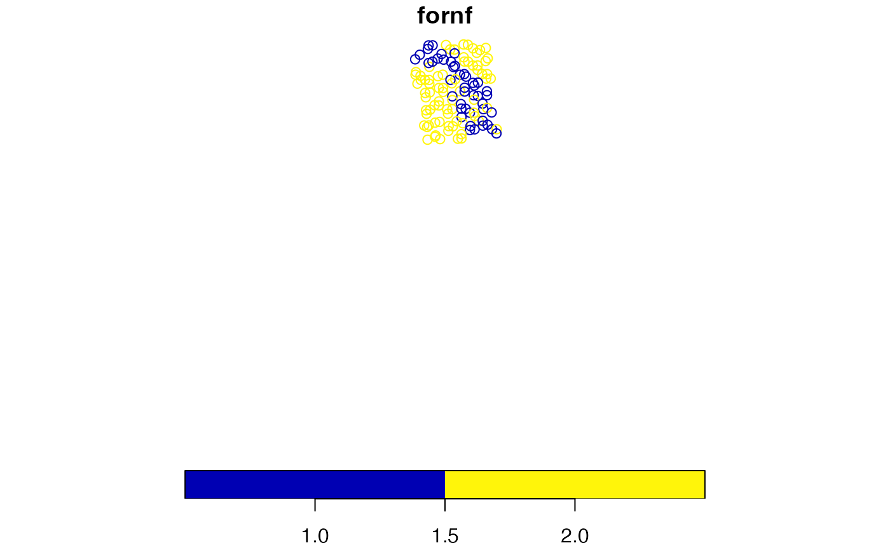
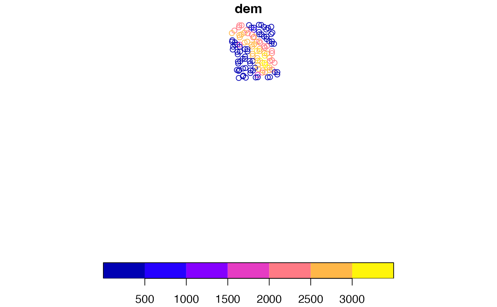

spExtractRast.RdExtracts values from one or more raster layers and appends to input SpatialPoints layer or data frame. Points are reprojected on-the-fly to projection of raster(s) using PROJ.4 transformation parameters and rgdal spTransform function. Includes options to use bilinear interpolation or summarize over a window of n pixels using a specified statistic.
spExtractRast(
xyplt,
xyplt_dsn = NULL,
xy.uniqueid = "PLT_CN",
rastlst,
rastfolder = NULL,
rast.crs = NULL,
bandlst = NULL,
var.name = NULL,
interpolate = FALSE,
windowsize = 1,
windowstat = NULL,
rast.NODATA = NULL,
keepNA = TRUE,
ncores = 1,
showext = FALSE,
savedata = FALSE,
exportsp = FALSE,
exportNA = FALSE,
spMakeSpatial_opts = NULL,
savedata_opts = NULL,
gui = FALSE
)Data frame object or String. Name of layer with xy coordinates and unique identifier. Can be layer with xy_dsn, full pathname, including extension, or file name (with extension) in xy_dsn folder.
String. Name of database where xyplt is. The dsn varies by driver. See gdal OGR vector formats (https://www.gdal.org/ogr_formats.html).
String. Unique identifier of xyplt rows.
String vector or list or strings and/or rasters. File name(s) with extensions, or raster object(s). Note: raster objects must be written to file.
String. Name of the folder with raster layers. Optional. Useful if all raster layers are in same folder.
EPSG code or PROJ.4 String. Name of coordinate reference system for rasters with no projection defined. If more than one raster has no projection defined, the same crs will be used.
Numeric named list. If rastfnlst includes a multi-layer raster and only 1 or some layers are desired, specify layer numbers in a named list format with names matching the base names in rastfnlst (e.g., list(rast1=5, rast3=1:3)). If NULL, all layers are extracted.
String vector. Extracted variable name(s). If NULL, uses the basename of raster layer, including band number for multi-band rasters.
Logical vector. If TRUE, uses bilinear interpolation of pixel values, weighted average of 4 nearest pixels (i.e., continuous data).
Number vector. The size of window for summarizing data.
Character vector. If windowsize is greater than one, the statistic to use for summarizing data ("mean", "min", "max", "median", "sum", "range", "var", "sd", "rsd", "mode", "value"). If windowstat="value", all pixel values are returned, otherwise 1 value per row in xyplt is returned.
Numeric vector. NODATA value(s) of raster if not predefined (See notes below). This value will be converted to NA and removed if keepNA=FALSE. If rastfnlst includes more than one raster, the rast.NODATA value should coincide with number of rasters in rastfnlst. If only one rast.NODATA, the same NODATA value is used for all rasters.
Logical. If TRUE, keeps NA values after data extraction.
Integer. Number of cores to use for extracting values.
Logical. If TRUE, layer extents are displayed in plot window.
Logical. If TRUE, the input data with extracted values are saved to outfolder.
Logical. If TRUE, the extracted raster point data are exported to outfolder.
Logical. If TRUE, NA values are exported to outfolder.
List. See help(spMakeSpatial_options()) for a list of options. Use to convert X/Y values to simple feature (sf) coordinates.
List. See help(savedata_options()) for a list of options. Only used when savedata = TRUE. If out_layer = NULL, default = 'rastext'.
Logical. If gui, user is prompted for parameters.
sf object or data frame. Input xyplt data with extracted raster values appended.
String vector. Raster output names.
String vector. Raster pathnames.
Data frame. Raster information input to zonal summaries.
sf List. If NA values exist after data extraction, the spatial NA points are returned.
If savedata=TRUE, pltassgn and unitarea are saved to outfolder.
If
exportsp=TRUE, the spatial sf points object is exported to outfolder.
.
If exportNA=TRUE and NA values exist after data extraction, the spatial NA
points are exported to outfolder.
*If variable = NULL, then it will prompt user for input.
rast.NODATA
NODATA values are raster pixel values that have no data of
interest, including pixels within the extent of the layer, but outside the
area of interest. Sometimes these pixels have been defined previously. The
defined NODATA pixels are imported to R as NULL values. When not previously
defined, the pixels outside the area of interest will be the minimum or
maximum value depending on the data type (e.g., 16-bit signed: min=-32,768;
max=32,768) or byte size (1 byte: min=0; max=255). These NODATA values will
be added to the zonal statistic calculations if not specified in
rast.NODATA.
The spTransform (rgdal) method is used for on-the-fly map projection conversion and datum transformation using PROJ.4 arguments. Datum transformation only occurs if the +datum tag is present in the both the from and to PROJ.4 strings. The +towgs84 tag is used when no datum transformation is needed. PROJ.4 transformations assume NAD83 and WGS84 are identical unless other transformation parameters are specified. Be aware, providing inaccurate or incomplete CRS information may lead to erroneous data shifts when reprojecting. See spTransform help documentation for more details.
# Get point data from WYplt data in FIESTA
WYplt <- FIESTA::WYplt
# Get raster layers from FIESTA external data
fornffn <- system.file("extdata",
"sp_data/WYbighorn_forest_nonforest_250m.tif",
package = "FIESTA")
demfn <- system.file("extdata",
"sp_data/WYbighorn_dem_250m.img",
package = "FIESTA")
# Extract points from raster
xyext <- spExtractRast(xyplt = WYplt,
rastlst = c(fornffn, demfn),
var.name = c("fornf", "dem"),
xy.uniqueid = "CN",
spMakeSpatial_opts = list(xvar = "LON_PUBLIC",
yvar = "LAT_PUBLIC",
xy.crs = 4269))
#> /private/var/folders/c6/3mlbrgp57ls3_xf43cjzfp0c0000gn/T/Rtmpeyl4QA/temp_libpath133b73b28708d/FIESTA/extdata/sp_data/WYbighorn_forest_nonforest_250m.tif
#> /private/var/folders/c6/3mlbrgp57ls3_xf43cjzfp0c0000gn/T/Rtmpeyl4QA/temp_libpath133b73b28708d/FIESTA/extdata/sp_data/WYbighorn_dem_250m.img
#> no interpolation used for any raster layers
#> pixel windowsize of 1 will be used for all raster layers
#> rasterfile
#> 1: /private/var/folders/c6/3mlbrgp57ls3_xf43cjzfp0c0000gn/T/Rtmpeyl4QA/temp_libpath133b73b28708d/FIESTA/extdata/sp_data/WYbighorn_forest_nonforest_250m.tif
#> 2: /private/var/folders/c6/3mlbrgp57ls3_xf43cjzfp0c0000gn/T/Rtmpeyl4QA/temp_libpath133b73b28708d/FIESTA/extdata/sp_data/WYbighorn_dem_250m.img
#> band var.name interpolate windowsize statistic rast.NODATA
#> 1: 1 fornf FALSE 1 none NA
#> 2: 1 dem FALSE 1 none NA
#> reprojecting layer...
#> from: EPSG:4269
#> to: +proj=aea +lat_0=23 +lon_0=-96 +lat_1=29.5 +lat_2=45.5 +x_0=0 +y_0=0 +datum=NAD27 +units=m +no_defs
#> extracting point values from WYbighorn_forest_nonforest_250m ...
#> 2929 missing values for WYbighorn_forest_nonforest_250m
#> reprojecting layer...
#> from: EPSG:4269
#> to: +proj=aea +lat_0=23 +lon_0=-96 +lat_1=29.5 +lat_2=45.5 +x_0=0 +y_0=0 +datum=NAD27 +units=m +no_defs
#> extracting point values from WYbighorn_dem_250m ...
#> 2926 missing values for WYbighorn_dem_250m
names(xyext)
#> [1] "sppltext" "outnames" "rastfnlst" "inputdf" "NAlst"
xyext$outnames
#> [1] "fornf" "dem"
sppltext <- xyext$sppltext
head(sppltext)
#> Simple feature collection with 6 features and 20 fields
#> Geometry type: POINT
#> Dimension: XY
#> Bounding box: xmin: -106.0363 ymin: 42.26546 xmax: -105.6679 ymax: 42.41013
#> Geodetic CRS: NAD83
#> CN INVYR STATECD CYCLE UNITCD COUNTYCD PLOT MEASYEAR RDDISTCD
#> 1 40404728010690 2013 56 3 2 1 86688 2013 NA
#> 2 40404729010690 2011 56 3 2 1 84596 2011 1
#> 3 40404730010690 2013 56 3 2 1 88993 2013 6
#> 4 40404731010690 2012 56 3 2 1 82340 2012 NA
#> 5 40404733010690 2012 56 3 2 1 82869 2012 NA
#> 6 40404734010690 2013 56 3 2 1 83304 2013 NA
#> NF_SAMPLING_STATUS_CD PLOT_STATUS_CD NF_PLOT_STATUS_CD NBRCND NBRCNDSAMP
#> 1 0 2 NA 1 1
#> 2 0 1 NA 1 1
#> 3 0 1 NA 1 1
#> 4 0 2 NA 1 1
#> 5 0 2 NA 1 1
#> 6 0 2 NA 1 1
#> NBRCNDFOR CCLIVEPLT FORNONSAMP PLOT_ID fornf dem
#> 1 0 0 Sampled-Nonforest ID560200186688 NA NA
#> 2 1 17 Sampled-Forest ID560200184596 NA NA
#> 3 1 41 Sampled-Forest ID560200188993 NA NA
#> 4 0 0 Sampled-Nonforest ID560200182340 NA NA
#> 5 0 0 Sampled-Nonforest ID560200182869 NA NA
#> 6 0 0 Sampled-Nonforest ID560200183304 NA NA
#> geometry
#> 1 POINT (-105.9625 42.41013)
#> 2 POINT (-105.7277 42.40928)
#> 3 POINT (-105.6679 42.40953)
#> 4 POINT (-106.0313 42.35599)
#> 5 POINT (-105.8509 42.31655)
#> 6 POINT (-106.0363 42.26546)
xyext$inputdf
#> rasterfile
#> 1: /private/var/folders/c6/3mlbrgp57ls3_xf43cjzfp0c0000gn/T/Rtmpeyl4QA/temp_libpath133b73b28708d/FIESTA/extdata/sp_data/WYbighorn_forest_nonforest_250m.tif
#> 2: /private/var/folders/c6/3mlbrgp57ls3_xf43cjzfp0c0000gn/T/Rtmpeyl4QA/temp_libpath133b73b28708d/FIESTA/extdata/sp_data/WYbighorn_dem_250m.img
#> band var.name interpolate windowsize statistic rast.NODATA
#> 1: 1 fornf FALSE 1 none NA
#> 2: 1 dem FALSE 1 none NA
# Plot extracted values of forest/nonforest
plot(sppltext["fornf"])

# Plot extracted values of dem (i.e., elevation)
plot(sppltext["dem"])
